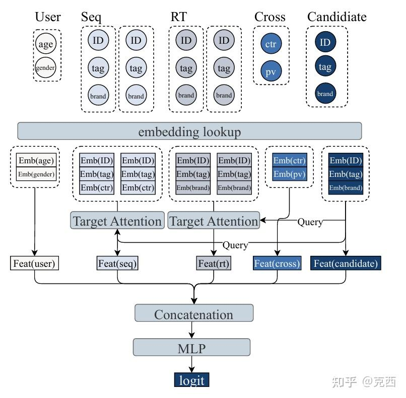
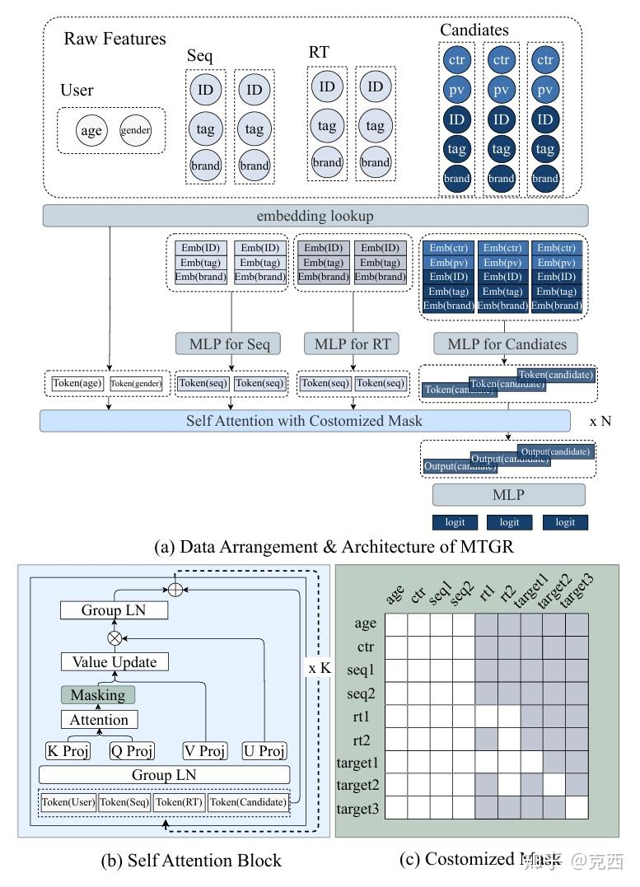
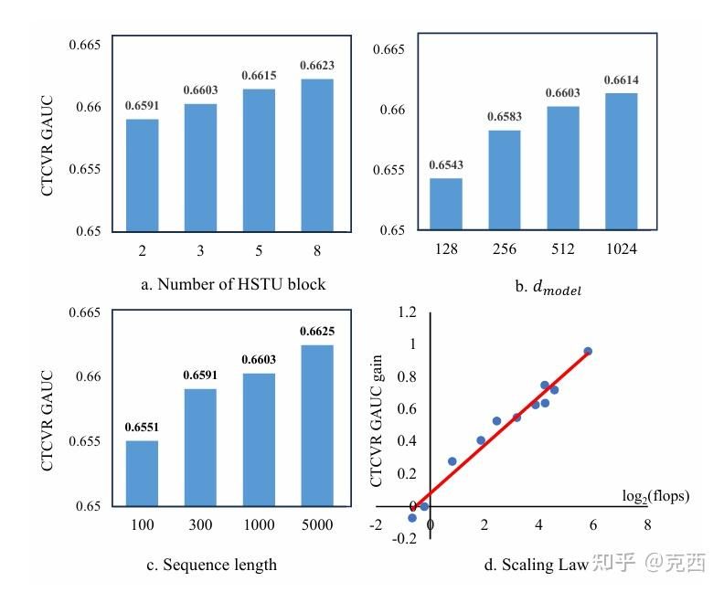

0. 写在前面
先回顾一下：
OneRec 的目标是：
用生成式模型统一召回和排序，直接生成推荐 session。PinRec 的目标是：
用生成式模型生成 dense embedding，作为工业级召回通道。MTGR 的目标更像是：
很多生成式推荐为了把推荐问题组织成 token 序列，会放弃传统工业推荐模型里长期积累的 cross features。但美团发现，丢掉 cross features 会严重伤害效果，而且靠扩大模型规模也补不回来。
所以 MTGR 的核心不是“生成 item ID”，也不是“生成 embedding”。它更像一种 generative-style ranking framework：
把同一用户请求下的多个候选 item 聚合成一个 token 序列，
保留用户特征、历史序列、实时行为、候选特征、cross features，
再用 HSTU/self-attention 一次性输出所有候选的排序分数。论文报告 MTGR-large 相比美团线上优化两年的 DLRM baseline，实现 65x FLOPs per sample 的前向计算规模，训练成本基本不变，推理成本反而降低 12%，线上带来 PV_CTR +1.90%、UV_CTCVR +1.02%。论文还说这是近两年离线和线上最大收益，并已部署到美团外卖主流量。
它回答了一个很工业的问题：
推荐模型到底该怎么 scale？是完全转向生成式范式，还是把生成式序列建模能力接回传统排序特征体系？
MTGR 选择了后者。
1. 背景：DLRM 和 GRM 各自卡在哪里
论文把工业推荐模型分成两类。
第一类是 DLRM, Deep Learning Recommendation Model。这是工业推荐过去十年最常见的范式：
user features
item features
context features
user behavior sequence
cross features
-> embedding
-> sequence module / cross module / MLP
-> score(user, item)DLRM 的优势是效果强，尤其擅长利用人工设计的特征和交叉特征。例如：
用户对当前候选商家的历史 CTR
用户在当前地理位置附近的购买频率
用户对候选品类的曝光次数和点击率
候选 item 与用户实时行为之间的统计交叉这些 cross features 很多是业务、数据、工程团队多年积累出来的，在线上排序里非常值钱。
但 DLRM 的扩展性差。因为它通常对每个 user-item pair 独立打分：
用户 u 有 K 个候选 item
传统 DLRM 需要跑 K 次或近似 K 次重模型如果扩大 cross module、MLP 或 attention，推理成本会随候选数近似线性增长，线上延迟难以承受。
第二类是 GRM, Generative Recommendation Model。
GRM 把用户行为组织成 token 序列，用 transformer 做 next token prediction 或类似生成式建模。它的优势是：
- 可以端到端建模长用户行为链。
- 用户级计算可以复用，减少样本冗余。
- transformer/HSTU 这类结构有更好的 scaling potential。
但 GRM 的一个大问题是：为了形成“自然语言式”的行为序列，它往往只保留 item/action token，难以保留候选和用户之间的复杂 cross features。
论文的关键观察是：
去掉 cross features 会显著损害模型效果；
这种损害无法通过单纯扩大 GRM 模型规模补回来。这就是 MTGR 的出发点。
2. MTGR 想解决的核心矛盾
MTGR 要同时拿到两边的好处：
DLRM 的特征完整性
+ GRM 的用户级序列建模和可扩展性它不想做一个“纯生成式推荐器”，而是要做一个能 scale 的 ranking model。
论文里最重要的问题可以写成：
如何保留 DLRM 的 cross features，
同时避免对每个候选 item 独立跑一遍重模型？MTGR 的答案是：
把同一用户请求下的所有候选聚合成一个样本，
把 user/profile/sequence/realtime/candidate/cross features 全部 token 化，
用带定制 mask 的 HSTU 一次性建模，
最后只取 candidate tokens 的输出做 logit。也就是说，MTGR 的核心操作是 user sample aggregation。
3. 传统 DLRM 的数据排列
传统排序里，一个用户和一个候选 item 形成一个样本。
论文写成：
\(D_i = [U, S, R, C_i, I_i]\)
其中：
U：用户 profile 特征，例如年龄、性别等。S：用户长期历史行为序列。R：用户最近几小时或一天内的实时行为序列。C_i：用户和第i个候选之间的 cross features。I_i：第i个候选 item 自身特征。
如果一个请求有 K 个候选，传统 DLRM 会形成：
\(D_1 = [U, S, R, C_1, I_1] \\ D_2 = [U, S, R, C_2, I_2] \\ ... \\ D_K = [U, S, R, C_K, I_K]\)
问题很明显：U/S/R 对同一个用户请求是重复的，但每个候选都要重新计算一遍。越想把模型做大，这种重复越浪费。
传统优化常见有两类。
一种是扩大 user tower，把用户表示算好后复用。但这类方法通常削弱 user-item 交互，cross features 很难充分进入重模型。
另一种是扩大 cross module，让用户和候选交互更强。但 cross module 要对每个候选单独跑，成本随候选数线性增长。
MTGR 的数据重排正是为了解这个矛盾。
4. MTGR 的数据重排：把候选聚合成序列

MTGR 不再把每个候选拆成独立样本，而是把同一个用户请求下的候选聚合起来：
\(D = [U, S, R, [C, I]_1, [C, I]_2, ..., [C, I]_K]\)
用户公共信息：U, S, R
候选 1：cross features C_1 + item features I_1
候选 2：cross features C_2 + item features I_2
候选 3：cross features C_3 + item features I_3
...这样一个样本里包含同一用户的一组候选。模型只需要对这个请求做一次序列建模，就能输出所有候选的 logit。
传统 DLRM 是：
for candidate in candidates:
score = model(user, candidate)MTGR 是：
scores = model(user, all_candidates)这让用户侧长序列和公共特征只计算一次，同时候选 tokens 仍然可以携带自己的 cross features。
这也是 MTGR 能把单样本 FLOPs 做到 DLRM 的 65 倍，但推理成本仍然可控甚至降低的根本原因。
5. MTGR 如何把特征变成 token
MTGR 的输入并不是天然 token。它把不同类型的推荐特征统一成 transformer/HSTU 可处理的 token 序列。
5.1 用户 scalar 特征
用户 profile 里的标量或离散特征，例如：
age
gender
city
membership level每个特征可以自然变成一个 token：
Token(age)
Token(gender)
...这些 token 维度统一到 d_model。
5.2 历史行为序列 S
长期历史行为 S 中每个 item 被视为一个 token。
每个历史 item 内部可能有多种特征：
item ID
tag
brand
historical CTR
...这些特征先 embedding lookup，再 concat，再经过 MLP 映射到统一维度：
FeatS_i = MLP(Concat(Emb(features of S_i)))于是长期历史序列变成：
Token(seq_1), Token(seq_2), ..., Token(seq_N)5.3 实时行为序列 R
实时行为 R 和 S 类似，也把每个最近交互 item 变成一个 token。论文里在线配置是：
S 最大长度 = 1000
R 最大长度 = 100R 很重要，因为外卖推荐里用户最近几小时或当天行为可能强烈影响当前需求。
5.4 候选 token
每个候选 token 不只包含 item 自身特征 I_i，还包含 cross features C_i：
candidate token_i = MLP(Concat(Emb(C_i), Emb(I_i)))这是 MTGR 和很多 GRM 的关键区别。候选 token 里保留了候选和用户之间的交叉统计，例如候选维度的历史 CTR、曝光数、用户-候选交互统计等。
最终输入序列类似：
[user tokens,
long-term seq tokens,
realtime seq tokens,
candidate_1 token,
candidate_2 token,
...
candidate_K token]HSTU 处理这个序列后，取 candidate tokens 的输出，接 MLP 得到每个候选的 logit。
6. 为什么 MTGR 仍然叫 Generative Recommendation
读这篇论文时容易困惑：MTGR 好像没有生成 item ID，也没有生成推荐列表，为什么叫 generative recommendation？
我的理解是：MTGR 借的是 GRM 的 tokenized sequence modeling 和 scalable attention framework，而不是典型的 autoregressive item generation。
它和 OneRec、PinRec 的关系可以这样理解：
OneRec：生成 semantic ID/session
PinRec：生成 dense embedding 做召回
MTGR：把 ranking 样本 token 化，用 HSTU/GRM 式序列模型扩展 rankingMTGR 的“生成式”更多体现在：
- 把推荐数据重组为 token 序列。
- 使用 HSTU 这类面向 generative recommender 的序列建模架构。
- 利用用户级聚合减少重复计算，从而支持 scaling law。
但它的训练目标不是 next-token prediction，而是 discriminative ranking loss。论文明确说：
MTGR incorporates cross features in candidate tokens and learns with a discriminative loss.所以更准确地说，MTGR 是 generative-style scalable ranking model。
7. HSTU 编码器：MTGR 的主体结构

MTGR 使用 HSTU 风格的 encoder-only 架构。输入是一长串 token，输出每个 token 的表示。
HSTU block 大致包含：
Group Layer Norm
Q/K/V/U projections
masked attention
value update
U 与更新后的 V 做交互
Group Layer Norm
MLP + residual论文里的 attention 更新可以直观理解成：
根据定制 mask，让不同类型 token 在允许的信息范围内交互；
然后更新各 token 表示。最后 candidate token 的输出进入 MLP：
candidate_output_i -> MLP -> logit_i与传统 DLRM 的最大区别是：候选之间、候选和实时行为、候选和长期序列，都在同一个序列模型里以 token 形式交互。
8. Group-Layer Normalization：为什么普通 LN 不够
MTGR 输入 token 来自不同语义空间：
用户 profile token
长期历史 item token
实时行为 token
候选 token
cross feature token这些 token 的统计分布很可能差异很大。比如年龄/性别这类 profile 特征、历史 item embedding、候选 cross feature 统计，本来就不是同一种东西。
如果直接用普通 LayerNorm，把它们放在一起统一归一化，可能会让不同 domain 的 token 分布互相干扰。
所以 MTGR 提出 Group-Layer Normalization, GLN：
同一类型/同一 domain 的 token 作为一个 group，
分别做 LayerNorm。直观上：
user tokens 用自己的均值方差归一化
seq tokens 用自己的均值方差归一化
rt tokens 用自己的均值方差归一化
candidate tokens 用自己的均值方差归一化GLN 的作用是把不同语义空间对齐到可比较的尺度，再进入 self-attention。
消融实验也证明它重要。MTGR-small 的 CTCVR GAUC 是 0.6603，去掉 GLN 后降到 0.6585；这个下降幅度已经接近 small 到 medium 的部分收益。
9. Dynamic Masking：避免信息泄漏的关键
MTGR 的另一个关键设计是 dynamic masking。
因为 MTGR 把同一个用户请求下的实时行为和候选聚合成一个序列，如果 mask 设计不对，就可能发生信息泄漏。
论文把 token 分成三类：
9.1 Static sequence
包括：
U：用户 profile
S：长期历史序列这些信息发生在当前聚合窗口之前，不会造成因果问题。因此它们对所有 token 可见。
规则：
static sequence visible to all tokens9.2 Dynamic sequence
主要是：
R：实时行为序列实时行为可能和候选曝光窗口重叠。例如用户下午的候选不能看到晚上才发生的行为，否则就是未来信息泄漏。
因此 R 必须按照时间做 causal visibility：
每个实时行为 token 只对它之后发生的 token 可见也就是说，候选只能看见自己之前已经发生的实时行为，不能看见未来实时行为。
9.3 Candidate tokens
候选 token 只允许看自己：
candidate token visible to itself only这条规则很重要。否则不同候选之间可能互相泄漏标签相关信息，或者形成不合理的候选间依赖。
最终 mask 规则是：
1. U/S 对所有 token 可见
2. R 按时间因果可见
3. Candidate 只看自己去掉 dynamic mask 后，MTGR-small 的 CTCVR GAUC 从 0.6603 降到 0.6587，说明 mask 不只是理论洁癖，而是真影响线上排序任务。
10. User-level compression
论文摘要里说 MTGR 通过 user-level compression 加速训练和推理。这个概念可以和前面的 user sample aggregation 放在一起理解。
传统 DLRM 对同一用户的每个候选独立处理：
K candidates -> K samplesMTGR 聚合后：
K candidates -> 1 user-level sample用户侧的 U/S/R 只算一次。候选侧虽然仍有 K 个 token，但它们是在同一个 attention 序列里被处理。
这带来两层收益：
- 训练样本数量大幅减少，重复用户特征计算减少。
- 推理时对一个 request 只做一次模型前向，输出所有候选分数。
这和 PinRec 的 multi-token 有点类似：都是用一次较重计算换多个结果。但 PinRec 一次生成多个 future embeddings；MTGR 一次输出多个 candidate logits。
11. 训练系统：TorchRec 优化
MTGR 不是一个小模型。论文里 MTGR-large 的单样本前向是 55.76 GFLOPs，而 UserTower-SIM 是 0.86 GFLOPs，相当于约 65 倍。
要让它在工业数据上训练，框架优化是必须的。论文没有继续用美团原有 TensorFlow 框架，而是基于 PyTorch/TorchRec 重建训练系统，并做了多项优化。
11.1 Dynamic Hash Table
工业推荐有大量新用户、新 item、新稀疏 ID。静态 embedding table 有两个问题：
- 容量满了以后新 ID 无法实时分配。
- 为避免溢出预留过大空间，浪费内存。
MTGR 使用动态 hash table，把 key storage 和 value storage 解耦：
key storage：key -> pointer
value storage：embedding vector + metadata这样可以动态扩容，也能更高效地扫描和淘汰。
11.2 Embedding lookup 去重和通信优化
分布式推荐训练里，embedding lookup 和 all-to-all 通信非常重。MTGR 做了 embedding ID de-duplication，减少重复 ID 在设备之间传输，并支持自动 table merging。
11.3 Dynamic batch size 做负载均衡
用户行为长度是长尾分布。少数用户序列很长，多数用户序列很短。如果每个 GPU 固定 batch size，会出现计算负载不均。
常见做法是 sequence packing，但 mask 复杂。MTGR 选择更直接的方法：根据输入序列实际长度动态调整每个 GPU 的 local batch size，让各 GPU 计算量接近。
同时，在梯度聚合时按各 GPU batch size 加权，保持训练逻辑一致。
11.4 Pipeline 和 kernel 优化
MTGR 使用三个 stream：
copy stream：CPU -> GPU 数据拷贝
dispatch stream：embedding lookup 和通信
compute stream：forward/backward/update三者流水并行，减少 I/O 等待。同时使用 bf16 mixed precision，并基于 cutlass 做专用 attention kernel。
这些优化让框架相比 TorchRec 提升 1.6x 到 2.4x training throughput，并能在 100+ GPUs 上保持较好扩展性。
这部分很工程，但很重要。没有训练系统优化，MTGR 的模型设计很难落地。
12. 实验设置
论文使用美团真实工业数据，而不是公开数据集。原因也很实际：公开数据集通常缺少工业排序里最关键的 cross features，无法体现 MTGR 的核心价值。
离线数据规模：
| Split | Users | Items | Exposure | Click | Purchases |
|---|---|---|---|---|---|
| Train | 0.21B | 4,302,391 | 23.74B | 1.08B | 0.18B |
| Test | 3,021,198 | 3,141,997 | 76,855,608 | 4,545,386 | 769,534 |
离线任务：
CTR
CTCVR离线指标：
AUC
GAUC线上指标：
PV_CTR
UV_CTCVR其中 UV_CTCVR 是业务增长最关键指标。
13. 整体效果：MTGR-small 已经超过最强 DLRM
论文对比了多个 DLRM baseline：
DNN-SIM
MoE-SIM
MultiEmbed-SIM
Wukong-SIM
UserTower-SIM
UserTower-E2E其中 UserTower-SIM 是最强 DLRM baseline。
主表结果：
| Model | CTR AUC | CTR GAUC | CTCVR AUC | CTCVR GAUC |
|---|---|---|---|---|
| UserTower-SIM | 0.7593 | 0.6792 | 0.8815 | 0.6550 |
| MTGR-small | 0.7631 | 0.6826 | 0.8840 | 0.6603 |
| MTGR-medium | 0.7645 | 0.6843 | 0.8849 | 0.6625 |
| MTGR-large | 0.7661 | 0.6865 | 0.8862 | 0.6646 |
可以看到，即使最小的 MTGR-small，也超过了最强 DLRM。随着模型从 small 到 medium 到 large，指标继续提升。
论文还给出 MTGR-large 相比最强 DLRM 的相对提升：
CTR AUC: +0.8956%
CTR GAUC: +1.0748%
CTCVR AUC: +0.4990%
CTCVR GAUC: +1.4656%在工业排序里，GAUC 提升尤其重要，因为它更关注同一用户内候选排序能力。
14. Cross features 消融
Table 4 是整篇文章最重要的实验之一。
| Model | CTR AUC | CTR GAUC | CTCVR AUC | CTCVR GAUC |
|---|---|---|---|---|
| MTGR-small | 0.7631 | 0.6826 | 0.8840 | 0.6603 |
| w/o cross features | 0.7495 | 0.6689 | 0.8736 | 0.6514 |
| w/o GLN | 0.7606 | 0.6809 | 0.8826 | 0.6585 |
| w/o dynamic mask | 0.7620 | 0.6810 | 0.8828 | 0.6587 |
去掉 cross features 后，CTCVR GAUC 从 0.6603 掉到 0.6514。
这个下降非常大，甚至低于 UserTower-SIM 的 0.6550。也就是说：
没有 cross features 的 MTGR-small，
不仅失去 MTGR 的优势，
甚至打不过最强 DLRM。这证明了论文的核心观点：
在真实工业推荐系统里，cross features 不是可有可无的手工特征，而是排序效果的关键资产。
很多生成式推荐论文喜欢强调“端到端替代特征工程”。MTGR 的结论要冷静得多：至少在美团外卖这种高强度交易推荐场景里，丢掉 cross features 会造成巨大损失，模型规模无法简单补偿。
15. Scaling law：MTGR 的可扩展性证据
论文从三个维度看 MTGR 的 scaling：
- HSTU block 数。
d_model。- 输入序列长度。

Figure 3 显示，随着这些超参数增大，CTCVR GAUC 平滑提升。
例如 sequence length 从 100 提升到 5000，模型效果持续变好。这说明 MTGR 能真正利用更长用户行为，而不是像很多传统 DLRM 那样长序列输入后难以消化。
论文还画了 CTCVR GAUC gain 与 log2(FLOPs) 的关系，呈现 power-law 趋势。它要表达的是：
在 MTGR 的数据重排和 HSTU 架构下，
推荐 ranking model 可以像大模型一样从更多计算中持续获益。但这里也要谨慎：这是在美团内部数据和特征体系上的 scaling 证据，不等同于 NLP 那种跨任务通用 scaling law。它更像是工业推荐 ranking 场景里的经验 scaling curve。
16. 线上实验：少训练数据也能超过两年 DLRM baseline
MTGR 在线部署在美团外卖平台，用 2% 流量做 A/B。实验每天覆盖百万级曝光。
对比 baseline 是美团线上最先进 DLRM：UserTower-SIM，并且这个 DLRM 已经持续学习了 2 年。
MTGR 则使用最近 6 个月数据训练。即便训练数据少于 DLRM，线上仍显著超过 baseline。
Table 5：
| Model | CTR GAUC diff | CTCVR GAUC diff | PV_CTR | UV_CTCVR |
|---|---|---|---|---|
| MTGR-small | +0.0036 | +0.0154 | +1.04% | +0.04% |
| MTGR-medium | +0.0071 | +0.0182 | +2.29% | +0.62% |
| MTGR-large | +0.0153 | +0.0288 | +1.90% | +1.02% |
几个观察：
- 线上 UV_CTCVR 随模型规模提升，large 最好。
- PV_CTR 上 medium 高于 large，但业务最关键的 UV_CTCVR 是 large 最好。
- 论文强调 CTCVR GAUC 上 large 的收益超过过去一年全部优化累计收益。
这说明 MTGR 不只是离线指标好，在线也能承接。
17. MTGR 推理成本
论文说 MTGR-large 的单样本 forward FLOPs 是 DLRM 的 65 倍，但训练成本和 DLRM 相当，推理成本还降低 12%。这听起来反直觉。
关键在于“样本”的定义变了。
传统 DLRM：
一个样本 = 一个 user-candidate pair
一个请求 K 个候选 = K 个样本MTGR：
一个样本 = 一个 user request + K 个 candidate tokens
一个请求 K 个候选 = 1 个样本所以虽然 MTGR 单样本更重，但它一次处理整个候选集，避免了 K 次重复用户侧计算。
更直观地说：
DLRM 是轻模型重复跑很多次
MTGR 是重模型一次跑出很多候选分数当候选数较大、用户侧长序列较重时，后者反而更有成本优势。
18. MTGR 的真正贡献
第一，它指出纯 GRM 在工业 ranking 中的一个硬伤：丢 cross features 会伤害效果，而且扩大模型不能补偿。
第二，它提出 user sample aggregation，把同一用户请求下的多个候选合并成一个 token 序列，从而把推理成本从 candidate-level 重复计算改成 request-level 一次计算。
第三，它设计了适合异构推荐 token 的 GLN 和 dynamic masking，让用户特征、历史序列、实时行为、候选特征和 cross features 能在同一 HSTU 中安全交互。
第四，它给出完整训练系统优化，证明 65x 单样本 FLOPs 的排序模型可以在工业系统中训练和上线。
推荐模型 scaling 不一定意味着抛弃传统特征工程。更现实的路线可能是把传统特征体系 token 化、序列化，再接入大规模 attention 架构。
20. 局限
20.1 并非型生成式推荐
MTGR 虽然叫 Generative Recommendation Framework，但它不做 next item generation，也不生成 semantic ID。它更像是生成式推荐启发下的 scalable ranking model。
20.2 对 cross features 的依赖很强
MTGR 的优势高度依赖美团成熟的 cross feature 工程。如果一个系统没有强 cross features，MTGR 相比其他 GRM 的优势可能会变小。
20.3 候选间 mask 设计可能影响表达能力
论文让 candidate tokens 只看自己，避免候选间信息泄漏。但这也意味着模型没有充分建模候选间相对关系。对于需要 listwise reranking 的场景，候选之间的交互可能是有价值的。
20.4 Scaling law 仍是场景内经验
论文展示了 FLOPs 与 CTCVR GAUC gain 的 power-law 趋势，但这是在特定业务、数据、特征和模型范围内得到的。是否能外推到其他推荐场景，还需要更多证据。
21. 总结
MTGR 没有追逐“完全生成 item”的路线，而是回到美团外卖排序系统的真实问题：
DLRM 特征强但不好 scale；
GRM 好 scale 但容易丢 cross features；
能不能两者都要？MTGR 的答案是：
把同一用户请求下的候选聚合成 token 序列，
保留 DLRM 的全部特征和 cross features，
用 HSTU + GLN + dynamic mask 做统一建模，
再通过训练系统优化把大 FLOPs 模型真正上线。工业推荐的 scaling 不是简单把 LLM 或 generative retrieval 套上去，而是要尊重已有系统里真正有效的特征资产。MTGR 的价值就在于，它把传统推荐的 cross feature 工程和生成式序列模型的扩展能力接到了一起。